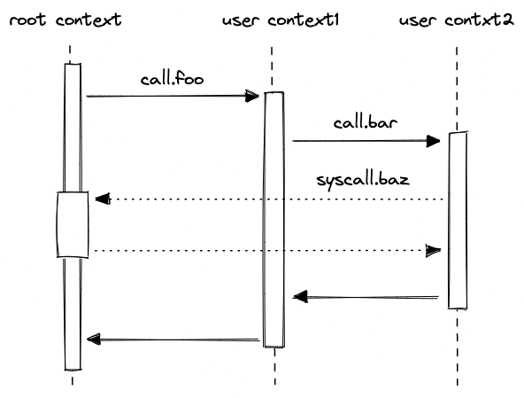

Execution contexts
Miden assembly program execution can span multiple isolated contexts. An execution context defines its own memory space which is not accessible from other execution contexts.
All programs start executing in a root context. Thus, the main procedure of a program is always executed in the root context. To move execution into a different context, we can invoke a procedure using the call instruction. In fact, any time we invoke a procedure using the call instruction, the procedure is executed in a new context. We refer to all non-root contexts as user contexts.
While executing in a user context, we can request to execute some procedures in the root context. This can be done via the syscall instruction. The set of procedures which can be invoked via the syscall instruction is limited by the kernel against which a program is compiled. Once the procedure called via syscall returns, the execution moves back to the user context from which it was invoked. The diagram below illustrates this graphically:

Procedure invocation semantics
As mentioned in the previous section, procedures in Miden assembly can be invoked via three different instructions: exec, call, and syscall. Invocation semantics of call and syscall instructions are basically the same, the only difference being that the syscall instruction can be used only with procedures which are defined in the program's kernel. The exec instruction is different, and we explain these differences below.
Invoking via call and syscall instructions
When a procedure is invoked via a call or a syscall instruction, the following happens:
- Execution moves into a different context. In case of a
callinstruction, a new user context is created. In case of asyscallinstruction, the execution moves back into the root context. - All stack items beyond the 16th item get "hidden" from the invoked procedure. That is, from the standpoint of the invoked procedure, the initial stack depth is set to 16.
When a procedure returns from a call or a syscall, the following happens:
- Execution moves back to the context from which the procedure was invoked.
- Stack depth is set to its original depth. Before the stack depth is reset, the VM checks if the current stack depth is exactly 16, and fails otherwise.
The manipulations of the stack depth described above have the following implications:
- The top 16 elements of the stack can be used to pass parameters and return values between the caller and the callee.
- Caller's stack beyond the top 16 elements is inaccessible to the callee, and thus, is guaranteed not to change as the result of the call.
- At the end of its execution, the callee must ensure that stack depth is exactly 16. If this is difficult to ensure manually, the
truncate_stackprocedure can be used to drop all elements from the stack except for the top 16.
Invoking via exec instruction
Procedures invoked via the exec instruction, are inlined at their call sites during compilation. Thus, from the standpoint of the final program, executing procedures this way is indistinguishable from manually including procedure code in place of the exec instruction. This also means that procedures invoked via the exec instruction are executed in the same context as the caller.
Kernels
A kernel defines a set of procedures which can be invoked from user contexts to be executed in the root context. Miden assembly programs are always compiled against some kernel. The default kernel is empty - i.e., it does not contain any procedures. To compile a program against a non-empty kernel, the kernel needs to be specified when instantiating the Miden Assembler.
A kernel can be defined similarly to a regular library module - i.e., it can have internal and exported procedures. However, there are some small differences between what procedures can do in a kernel module vs. what they can do in a regular library module. Specifically:
- Procedures in a kernel module cannot use
callorsyscallinstructions. This means that creating a new context from within asyscallis not possible. - Unlike procedures in regular library modules, procedures in a kernel module can use the
callerinstruction. This instruction puts the hash of the procedure which initiated the parent context onto the stack.
Memory layout
As mentioned earlier, procedures executed within a given context can access memory only of that context. This is true for both memory reads and memory writes.
Address space of every context is the same: the smallest accessible address is and the largest accessible address is . Any code executed in a given context has access to its entire address space. However, by convention, we assign different meanings to different regions of the address space.
For user contexts we have the following:
- The first words (each word is 4 field elements) are assumed to be global memory.
- The next words are reserved for memory locals of procedures executed in the same context (i.e., via the
execinstruction). - The remaining address space has no special meaning.

For the root context we have the following:
- The first words are assumed to be global memory.
- The next words are reserved for memory locals of procedures executed in the root context.
- The next words are reserved for memory locals of procedures executed from within a
syscall. - The remaining address space has no special meaning.

For both types of contexts, writing directly into regions of memory reserved for procedure locals is not advisable. Instead, loc_load, loc_store and other similar dedicated instructions should be used to access procedure locals.
Example
To better illustrate what happens as we execute procedures in different contexts, let's go over the following example.
kernel
--------------------
export.baz.2
<instructions>
caller
<instructions>
end
program
--------------------
proc.bar.1
<instructions>
syscall.baz
<instructions>
end
proc.foo.3
<instructions>
call.bar
<instructions>
exec.bar
<instructions>
end
begin
<instructions>
call.foo
<instructions>
end
Execution of the above program proceeds as follows:
- The VM starts executing instructions immediately following the
beginstatement. These instructions are executed in the root context (let's call this contextctx0). - When
call.foois executed, a new context is created (ctx1). Memory in this context is isolated fromctx0. Additionally, any elements on the stack beyond the top 16 are hidden fromfoo. - Instructions executed inside
foocan access memory ofctx1only. The address of the first procedure local infoo(e.g., accessed vialoc_load.0) is . - When
call.baris executed, a new context is created (ctx2). The stack depth is set to 16 again, and any instruction executed in this context can access memory ofctx2only. The first procedure local ofbaris also located at address . - When
syscall.bazis executed, the execution moves back into the root context. That is, instructions executed insidebazhave access to the memory ofctx0. The first procedure local ofbazis located at address . Whenbazstarts executing, the stack depth is again set to 16. - When
calleris executed insidebaz, the first 4 elements of the stack are populated with the hash ofbarsincebazwas invoked frombar's context. - Once
bazreturns, execution moves back toctx2, and then, whenbarreturns, execution moves back toctx1. We assume that instructions executed right before each procedure returns ensure that the stack depth is exactly 16 right before procedure's end. - Next, when
exec.baris executed,baris executed again, but this time it is executed in the same context asfoo. Thus, it can access memory ofctx1. Moreover, the stack depth is not changed, and thus,barcan access the entire stack offoo. Lastly, this first procedure local ofbarnow will be at address (since the first 3 locals in this context are reserved forfoo). - When
syscall.bazis executed the second time, execution moves into the root context again. However, now, whencalleris executed insidebaz, the first 4 elements of the stack are populated with the hash offoo(notbar). This happens because this time aroundbardoes not have its own context andbazis invoked fromfoo's context. - Finally, when
bazreturns, execution moves back toctx1, and then asbarandfooreturn, back toctx0, and the program terminates.